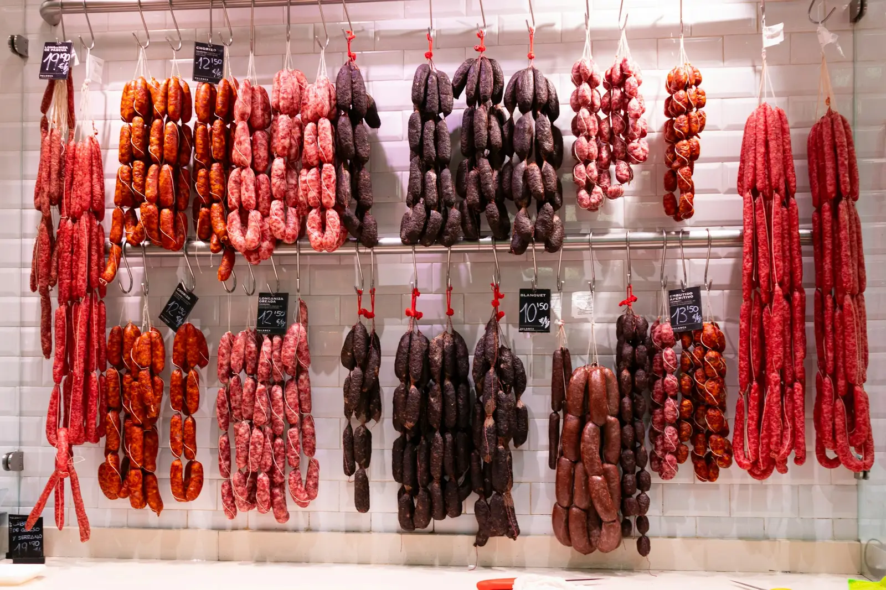
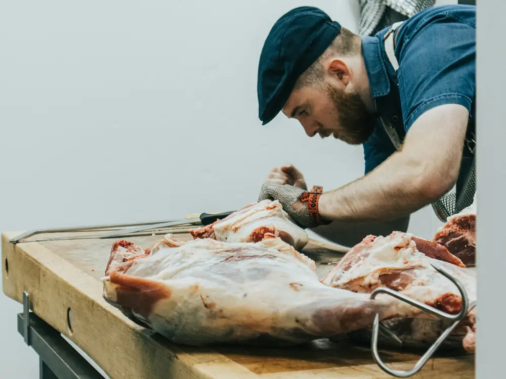
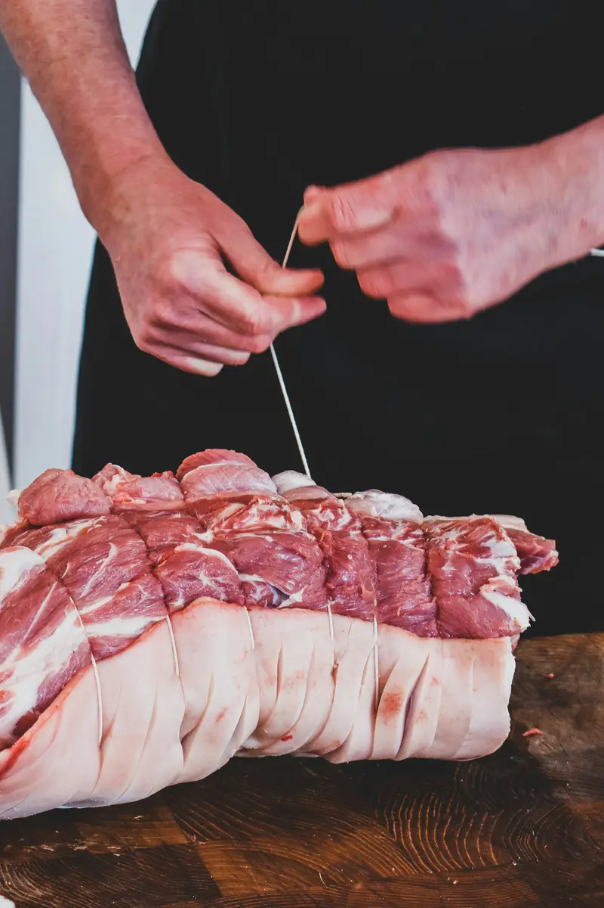
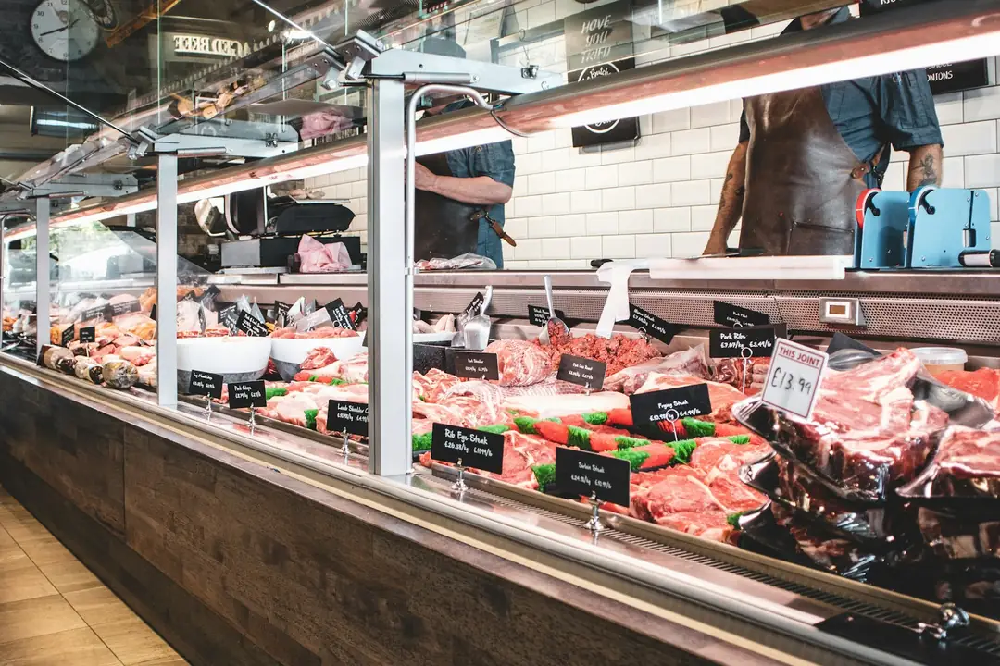
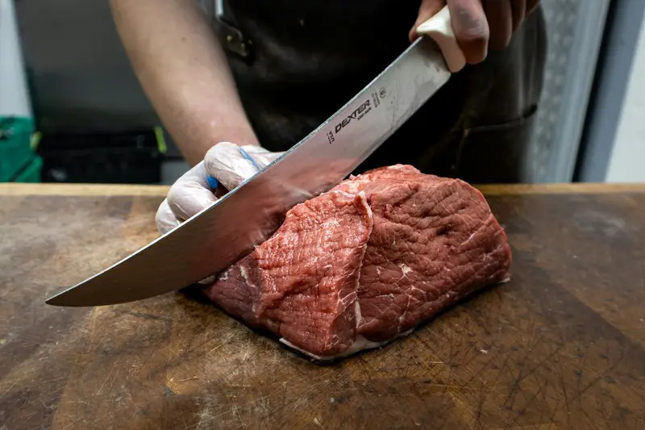
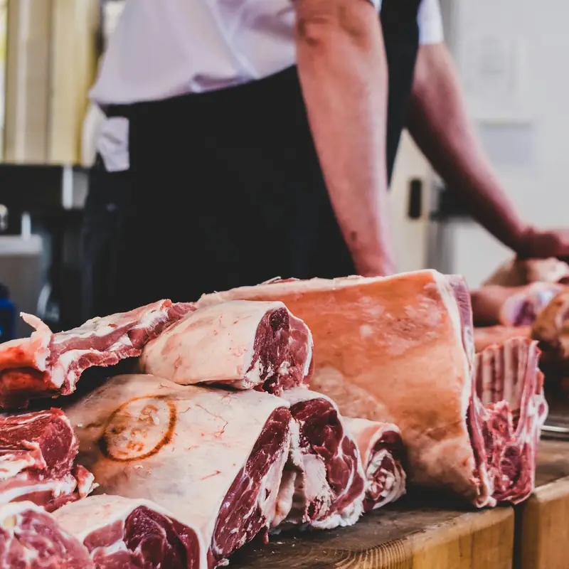
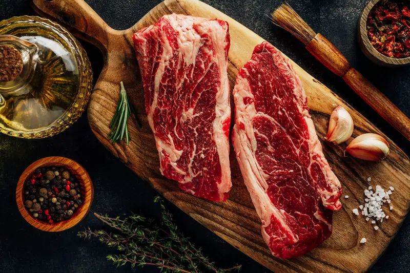
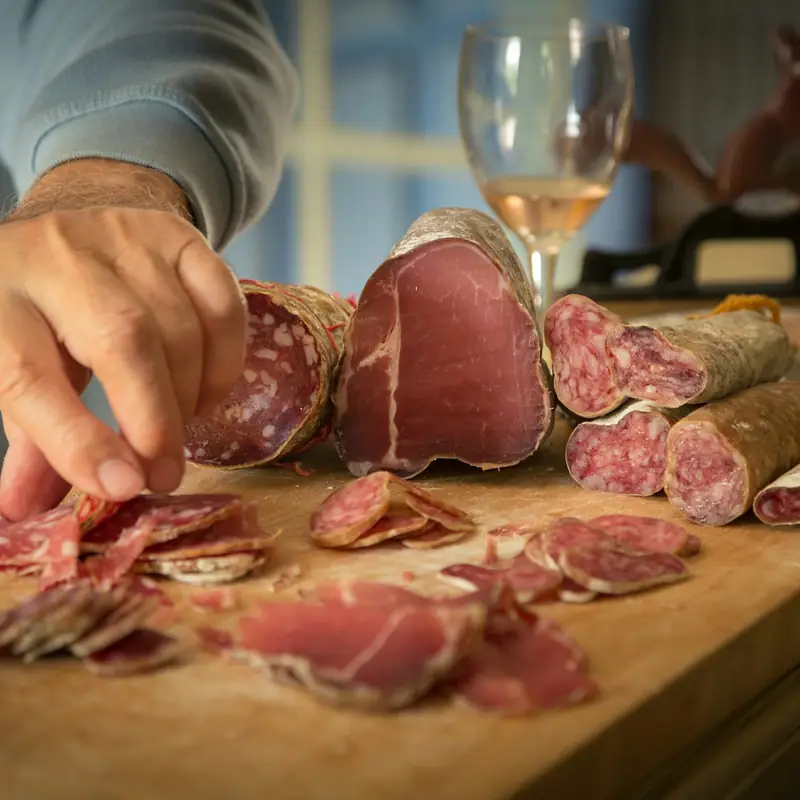

Depuis 1994, rue des Halles à Ensisheim
Viandes d'éleveurs voisins, charcuterie maison
Bœuf, veau, porc et volailles de fermes du Haut-Rhin, découpés à la demande. Appelez la veille : votre commande vous attend au comptoir.

En vitrine cette semaine

39,90 €le kg
Côte de bœuf maturée
maturée 4 semaines, environ 1,2 kg

16,90 €le kg
Saucisses à griller
recette de la maison

11,50 €le kg
Poulet fermier
élevé en plein air, prêt à cuire

45 €
Plateau charcuterie et fromages
pour 6 à 8 personnes
Commandez la veille, c'est prêt quand vous passez
Pour un rôti ficelé, un colis barbecue ou un plateau, le plus simple est de nous appeler.
Commandez la veille
En ligne ou par téléphone : dites-nous les morceaux, le poids ou le nombre de personnes. On vous conseille si vous hésitez.
On prépare votre commande
Découpe, ficelage, marinade : tout est fait le matin même, à l'atelier.
Vous passez la prendre
Votre paquet est étiqueté à votre nom. Pas de file d'attente, vous payez au comptoir.


Une affaire de famille
Depuis 1994, la famille Haegeli tient la boucherie de la rue des Halles, à deux pas de la place de l'Église.
Nous travaillons avec une dizaine d'éleveurs de la plaine d'Alsace et du Sundgau, que nous connaissons personnellement. Les bêtes sont découpées et préparées ici, à l'atelier.
Le lard est fumé sur place, les saucisses suivent les recettes de la maison. Demandez conseil : on vous explique comment cuire chaque morceau.
D'où viennent nos viandes
Nous achetons les bêtes entières, directement aux éleveurs. Le tableau est affiché en boutique et mis à jour chaque semaine.

| Viande | Élevage | Distance de la boutique |
|---|---|---|
| Bœuf | Ferme Zimmermann, MasevauxCharolaise, née et élevée en Alsace | 40 km |
| Veau | EARL Schmitt, BallersdorfÉlevé sous la mère | 38 km |
| Porc | Ferme Kieffer, RéguisheimPorc fermier, nourri aux céréales de la ferme | 6 km |
| Volaille | Ferme du Ried, BiltzheimPoulets plein air, 110 jours | 9 km |
| Agneau | Bergerie Hug, LinthalEn saison, d'avril à septembre | 34 km |
La boutique en images






Ils nous recommandent
4,9
167 avis sur Google
Laurent B. Côte de bœuf maturée parfaite pour le barbecue, découpée devant nous avec les conseils de cuisson en prime. On sait d'où vient la viande : c'est écrit au tableau.
Céline F. Plateau de charcuterie pour vingt personnes commandé pour un anniversaire : copieux, joliment présenté et prêt à l'heure.
Patrick S. Le presskopf maison et les knacks comme autrefois. Accueil souriant, même le samedi matin quand il y a du monde.
Les avis les mieux notés, du plus récent au plus ancien. Avis publiés sur Google par leurs auteurs, sans contrôle de notre part.
Avis imaginaires, comme l'entreprise. Sur le site d'un client, ses derniers avis Google s'affichent ici et se mettent à jour tout seuls.
Questions fréquentes
Puis-je commander à l'avance ?
Oui, par téléphone ou avec le formulaire de contact. Votre commande est prête à l'heure convenue.
Découpez-vous sur mesure ?
Oui : épaisseur des tranches, rôti bardé ou non, viande hachée devant vous. Demandez au comptoir.
Préparez-vous des buffets pour les fêtes ?
Oui : plateaux et buffets froids à partir de 10 personnes. Prévenez-nous une semaine avant.
Horaires et accès
Heures d'ouverture
14 h 30 – 18 h 30
Fermeture annuelle les deux premières semaines d'août.
- 14 rue des Halles
68190 Ensisheim - 03 53 01 21 90
- commande@boucherie-haegeli.example
- Itinéraire